Enquanto passeavam pelo campo, o Arrelia explicava às crianças a origem de muitos tesouros enterrados:
- Vocês pensam que naqueles tempos havia segurança como hoje? Eram longos os caminhos do sertão e estavam geralmente semeados de salteadores. A lei não dispunha de forças suficientes para puni-los, e eles, sabendo disto, não hesitavam em atacar os que julgavam carregar valores.
Assim, muitas vezes um garimpeiro que gastara tempo e esforço [ara acumular uma certa quantidade de ouro via-se tão pobre como antes ao ser atacado pelos bandidos. E ainda podia considerar-se um homem de sorte se conseguia escapar com vida.
A fim de evitar tais assaltos, foram criadas escoltas especiais para acompanhar os carregamentos de ouro e garantir que chegassem às Casas de Fundição. Quando um garimpeiro achava possuir ouro suficiente para compensar o pagamento da escolta, que não era pequeno, convocava-a para a remessa.
Muitos garimpeiros levavam tempo para acumular tal quantidade e às vezes morriam antes, deixando escondido o tesouro que haviam conseguido ajuntar. É “clauro” que muitos tesouros acabaram por ser descobertos. Outros, porém, continuam ocultos até hoje.
- Bem que a gente podia dar uma espiadinha, não é mesmo? – propôs Iberê, olhando cuidadosamente em redor.
- Você quer dizer procurá-los? – perguntou o Arrelia.
- Pois então – respondeu o menino, estranhando a dúvida do Arrelia.
- E o que você pretende fazer para encontrá-los?
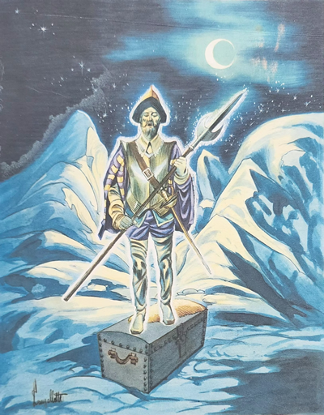
- Ora, a gente podia dar umas cavoucadinhas por aí.
- Muito fácil, não tem dúvida. Só que se pode passar a vida inteira cavoucando sem encontrar nada. Somente por acaso. Ou encontrando um mapa, ou pelo menos sonhando. Há pessoas que acreditam nos sonhos.
- Ouvindo você falar em sonhos, Arrelia, lembrei de uma coisa que aconteceu comigo – disse Carlinhos. Faz uns dois anos, tive um sonho sobre tesouro e deu certo.
O choque fez o Arrelia jogar a bengala no chão e exclamar:
- Não “diuga“! É “verdade”? Você sonhou com um tesouro e deu certo? Por que não contou antes?
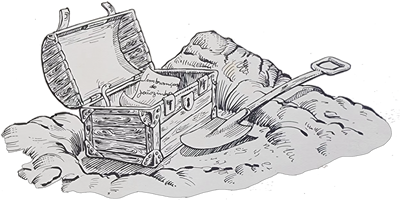
- Bem, é que . . . No fim, sabe . . . eu . . . – hesitou o menino.
- Ora, conte como foi – pediu o Arrelia, apanhando a bengala e olhando-a com cuidado para ver se apresentava algum estrago causado pelo tombo.
Carlinhos não parecia resolvido a iniciar a narração e acabou provocando o protesto das outras crianças. Não viu outro jeito senão contar a aventura:
- Eu havia assistido a um filme de caçadores de tesouros e tinha ficado impressionado. Para dizer a verdade, não foi um sonho que tive. Foram diversos. Mas o último pareceu tão verdadeiro que em parecia um sonho. Sonhei que estava chegando a uma ilha, num navio muito antigo, igual aos dos piratas. Engraçado que só eu me encontrava nele. Não tinha mais ninguém. Ainda um pouco longe da ilha, o navio começou a correr que nem foguete e acabou parando mansamente na areia. Desci e fiquei admirando o lugar, que parecia completamente deserto. Comecei a pensar: “O que vim fazer aqui?” De repente consegui lembrar-me: “Ah! Vim procurar um tesouro! “
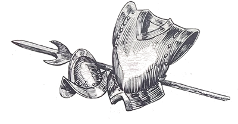
Comecei a andar pela ilha. Só árvores e mais árvores. Aí dei com um homem. Fazia lembrar um pirata mas não dava para ver direito porque era transparente e às vezes quase chegava a desaparecer. Que senti medo nem é preciso dizer.
- Faço ideia! Até eu já estou “apavoraudo”! – exclamou o Arrelia fazendo uma expressão de terror.
- Se fosse eu, daria um jeito de fugir do sonho – comentou Jaci com um olhar de esperteza.
- Falar é fácil – respondeu Carlinhos. Acha que se eu pudesse não havia fugido?
- Deixe o Carlinhos contar o sonho! – interveio o Arrelia. Quero saber como foi que ele achou o tesouro!
Sem disfarçar uma ponta de orgulho por ver todos os outros atentos à espera de suas palavras, Carlinhos prosseguiu:
- O tal homem que parecia um pirata perguntou-me:
- O que você quer nesta ilha?
Foi com muito custo que consegui responder:
- Não vim aqui por minha vontade. Mas estou procurando um tesouro.
- Não é qualquer um que pode fazer isso – disse ele com uma voz que dava medo. Porém estou com pena de você. Sei onde estão escondidos muitos tesouros. Tem um, por exemplo, bem perto de sua casa.
- É mesmo? – perguntei, começando a ficar animado.
- Sim. Venha comigo.
- Resolvi ir com ele. Fomos entrando pelo mato.
Marisa não resistiu e exclamou:
- Que coragem! Sozinho numa ilha com um fantasma!
- Era apenas um sonho, Marisa – lembrou o Arrelia. Se fosse “verdade”, o Carlinhos teria atravessado o oceano andando por cima da água,
Carlinhos ficou amuado e calou-se. Todos tiveram de implorar para que ele continuasse.
- Se me interromperem outra vez, não conto mais nada, hein? – prometeu ele e continuou a falar sobre o seu sonho:
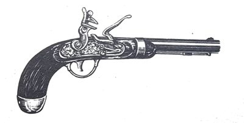
- Fomos andando. O mal era que o fantasma não precisava desviar-se do mato: passava por ele como se não existisse nada. E eu, pobre de mim! Tinha de correr para compensar as voltas que precisava dar.
Depois de algum tempo, eu não podia mais comigo. Sentia uma dor nos pés que não aguentava. Teve uma hora que não pude mais: sentei no chão mesmo. O fantasma sentiu minha falta e voltou. Olhou para mim e disse meio bravo:
- Se você não quer ver o tesouro, diga logo. Não posso perder tempo.
Mal podendo falar de cansado, respondi:
- Quere, eu quero. Só que estou quase morto. Não posso mais andar. Você passa pelo mato e eu não.
Ele ficou com dó de mim e disse:
- Está bem. Você vai ficar como eu. Venha.
Imediatamente senti uma leveza por todo o corpo e nem sombra de cansaço. Saí atrás dele. Percebi que eu também podia passar pelo mato sem me desviar
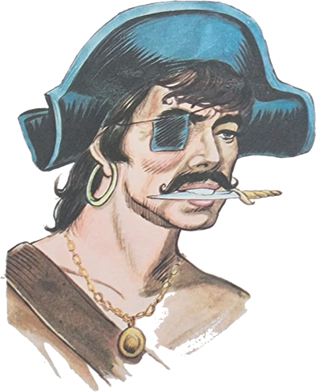
Jaci interrompeu-o assustada:
- Então você havia virado fantasma!
- Puxa “viuda”! – exclamou o Arrelia. Já estou ficando com medo do Carlinhos. E se ele é um fantasma e nós não sabemos?
Novamente o menino ficou amuado e novamente todos precisaram implorar para que ele prosseguisse.
- É a última vez que vocês me interrompem – advertiu ele. Mais uma vez e acabou-se
O Arrelia olhou para os outros com admiração. Carlinhos não estava mesmo para brincadeira.
- Depois de uma boa caminhada – continuou o menino – chegamos a uma casa. Vocês não são capazes de imaginar qual era a casa. Era a minha! Estava completa, não faltava nada. Só que estava deserta. Entramos por ela e fomos ao quintal. Vi com perfeição o pé de caqui que tem lá. O fantasma olhou por toda a parte como procurando lembrar-se do lugar onde estava escondido o tesouro. Deu uma volta pelo quintal, comigo sempre atrás dele, acabou parando perto do caquizeiro e disse:
- O tesouro está enterrado sob essa árvore.
Imediatamente pensei em conseguir uma enxada e ele surgiu na minha mão.
Iberê não conseguiu deixar de comentar:
- Já pensaram? O Carlinhos trabalhando!
- E por que não? – perguntou o menino, já meio ofendido.
- Mas deixe o Carlinhos terminar a estória! – pediu o Arrelia.
Felizmente, Carlinhos não se lembrou de sua promessa de não continuar caso fosse interrompido outra vez:
- Quando eu ia começar a cavar, acordei.
- Essa não! – exclamou o Arrelia, decepcionado. E depois?
- Logo que foi possível – continuou Carlinhos – fui ao quintal, agora de verdade, peguei a enxada e procurei o caquizeiro. Comecei a fazer buraco por toda a parte em volta a árvore. Quando eu ia desistir, a enxada bateu em alguma coisa.
- O tesouro! – gritaram todos os outros ao mesmo tempo.
- Abem . . . Não era bem um tesouro. Era uma lata bem forte e pelo jeito muito antiga. Não foi fácil de abrir, não.
- E o que estava dentro? Fale logo! – disse ansiosamente o Arrelia.
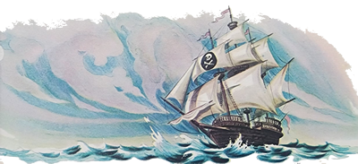
- Dentro da lata havia um vidro e dentro do vidro um papel. Pensei: “Deve ser o mapa do tesouro. É sempre assim: a gente encontra um mapa que diz para dar tantos passos à direita, tantos à esquerda e uma porção de coisas mais. No fim, dá-se com o tesouro.” Depois de muito esforço, consegui abrir a garrafa. Tirei o papel e li . . . Sabem o quê?
- Ora! O que podia ser? O mapa do tesouro é lógico! Exclamou o Arrelia.
- Nada disso.
- O que era então?
- Era um bilhete! Estava escrito: “Lembrança do Joãozinho, um caçador de tesouros que jamais encontrou nada.”
Dando este final à sua narração, Carlinhos teve de enfrentar novamente os protestos de seus companheiros:
- Que “bandiudo”! – disse o Arrelia. Ficamos uma hora ouvindo a estória do tesouro para depois bancarmos os bobos!
- Que brincadeira mais sem graça! – exclamou Jaci, medindo o menino de cima a baixo.
Carlinhos defendeu-se como pode:
- Mas foi esse o sonho que tive! E foi o que aconteceu!
- Não se pode esperar mesmo nada desse menino – sentenciou Jaci. Aposto que ele inventou toda essa estória agora.
- Pois é como eu disse – afirmou o Arrelia. Não é fácil encontrar um tesouro. A gente pode estar sobre um neste momento e nem pensar nisto. Aliás, consta que nestas redondezas um tesouro foi enterrado: o tesouro do Casaca de Ferro.
- Ele usava uma casava de ferro? – espantou-se Marisa.
- Não se sabe bem de onde surgiu o apelido – esclareceu o Arrelia. Dizem uns que ele usava uma armadura a fim de proteger-se de algum ataque, e daí teria vindo o apelido.
Eu havia dito antes que os garimpeiros costumavam acumular o ouro para compensar os gastos com a escolta, não é mesmo? Pois foi por causa disto que teve origem o tesouro do Casaca de Ferro. Era um homem muito rico que possuía importante fazenda. Tinha extensas lavouras e dedicava-se também à mineração do ouro.
Gostava muito de festas, e por ocasião do batizado de seus escravos não deixava de realizar grandes festejos a que compareciam também as pessoas mais importantes do lugar. Eram festas muito “boniutas”, das quais participavam os escravos, que as animavam com suas danças e cantigas características.
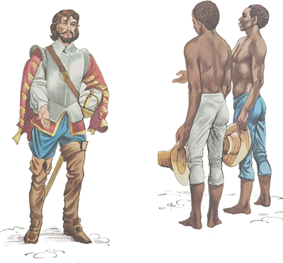
Naturalmente, o Casaca de Ferro, por ser rico e muito importante como era, possuía alguns inimigos, e não deviam ser de boa paz já que o obrigavam a andar de armadura. Não eram muitas as pessoas de sua inteira confiança e a mais leal de todas era o seu capataz.
Assim, quando num mês de junho apareceram na fazenda dois negros muito fortes e desconhecidos pedindo trabalho e foram aceitos pelo Casaca de Ferro, seu capataz procurou-o preocupado:
- Longe de mim querer contrariar suas ordens, senhor, mas não creio que seja procedimento seguro dar emprego a esses homens.
Ele virou-se surpreso para o capataz:
- E no que você se prende para suspeitar deles? Conhece-os?
- Não, isso não. Porém os modos deles, as suas expressões, não me deixam tranquilo. É bem possível que tenham sido mandados por inimigos seus.
- Não creio. Acho que apenas desejam trabalhar.
- Pois não consigo pensar assim. Continuo com a opinião de que mandá-los embora seria melhor.
- Sossegue! São dois pobres homens incapazes de fazer mal a alguém!
- O senhor é quem manda. Contudo, não vou conseguir ficar sossegado.
O Casaca de Ferro insistiu que eram homens de bem e pediu ao capataz que não pensasse mais no assunto.
Aproximava-se a véspera de São Pedro e um grande movimento se apossou da fazenda. Os escravos corriam daqui e dali, enfeitando os lugares onde os festejos iam ser realizados.
Outra vez o capataz procurou o Casaca de Ferro e falou-lhe sobre os dois estranhos:
- O senhor vai permitir que eles participem da festa?
- Claro! -Por que não? Não tem direito? Também trabalham conosco!
- Sim, é verdade. Não contesto o direito que eles têm. Porém quanto mais os observo, mais me convenço de suas más intenções.
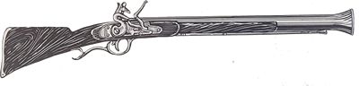
- Mas o que é isso? São dois coitados que só querem trabalhar!
- Não sei. Já estão conosco há vários dias e procedem de modo suspeito. Não fazem amizade com ninguém e portam-se de um jeito que dá a impressão de que só esperam o momento de realizar alguma coisa para partirem.
- Nada disso. Eles são novos aqui. Não podem mesmo ter feito amizade. Vamos dar tempo ao tempo. Você vai ver que acabarão por ficar bons camaradas.
- Receio que esperam a confusão da festa que vamos realizar para fazer alguma malvadeza.
- Tranquilize-se que nada acontecerá. Bem, vamos cuidar dos preparativos. Quero que esta festa de São Pedro seja a melhor de todas.
Os dois homens separaram-se e foram verificar os preparativos. O capataz, logo adiante, surpreendeu os dois estranhos cochichando e ficou mais alarmado ainda.
Chegou o dia da festa. Uma alegria enorme pairava por toda a parte. Danças e cantos, comes e bebes, risadas. O próprio capataz, com o divertimento nem se lembrou mais dos dois estranhos.
Na fazenda havia uma linda capelinha construída ao pé de enorme figueira. Era um lugar sombreado e acolhedor. Ali o Casaca de Ferro costumava rezar.
Na noite da festa, ele dirigiu-se à capelinha e ajoelhou-se logo na entrada. Ficou ali rezando, sem perceber a aproximação dos dois estranhos. Aproximaram-se sorrateiramente, armados de espingardas, e esconderam-se atrás de uns arbustos. Para sentir-se mais à vontade na festa, o Casaca de Ferro havia tirado sua armadura. Dois fortes estampidos chamaram a atenção dos que estavam na festa. Todos correram para ver o que acontecera. Deram com o fazendeiro já agonizante e o levaram para a casa da fazenda. Imediatamente o capataz organizou vários grupos para dar caça aos dois negros que ele tinha certeza de serem os assassinos. Procuraram por todas as partes mas não conseguiram encontrá-los. Tinham conseguido escapar.
Algumas horas depois o fazendeiro morria. O pessoal da fazenda começou a dizer que o Casaca de Ferro deixara cinco enormes panelas cheias de ouro, enterradas num lugar que só ele sabia, pois estava preparando uma remessa à Casa de Fundição.
A notícia causou uma porção de buracos por todo o lugar, pois todos queriam por a mão naquela fortuna.
- Mas nada foi encontrado, não é verdade? – interrompeu Jaci.
- “Nauda” mesmo – afirmou o Arrelia. Agora, o pior aconteceu depois.
As crianças olharam para o Arrelia com nova curiosidade.
- Depois de algum tempo da morte do fazendeiro, alguns começaram a dizer que haviam visto o seu “fantausma”. O fazendeiro estava de volta para guardar o seu ouro. Quando era noite alta, um vulto branco perambulava pelos lugares próximos à fazenda, assustando as pessoas que encontrava. Quanta gente não correu por causa dele!
Jaci lembrou-se de brincar:
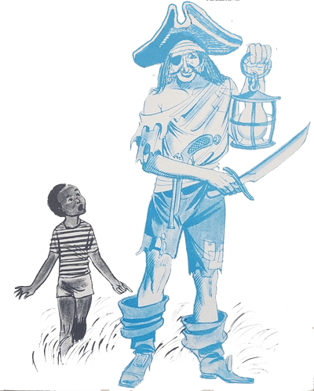
- Boa ocasião para o Carlinhos mostrar se é corajoso, hein, Arrelia? Você podia dizer-lhe onde é o lugar e ele iria lá à noite.
O Arrelia procurou Carlinhos com os olhos e perguntou-lhe:
- Você quer mesmo ver o “fantausma”? Conheço o lugar. Se você quiser ir lá à noite . . .
- O fantasma não me fez nada, ué! – respondeu Carlinhos. Não é falta de coragem, não, mas para que perder tempo?
As outras crianças começaram a caçoar do menino.
- Perder tempo, é? – disse Jaci. Você precisa é encontrar a coragem.
- Bem, “criançauda” – interveio o Arrelia. Deixem-me terminar a estória.
Custou um pouco antes que o Arrelia pudesse recomeçar:
- Alguns homens chegaram à conclusão de que se conseguissem descobrir o esconderijo do fantasma acabariam por encontrar o tesouro, pois é claro que o fantasma devia permanecer perto do ouro quando não estava assustando os outros. Foi organizado um grupo com os homens mais valentes do lugar para seguir a aparição. Uma noite, eles reuniram-se num local, no meio do mato à beira da estrada, por onde o fantasma também costumava passar.
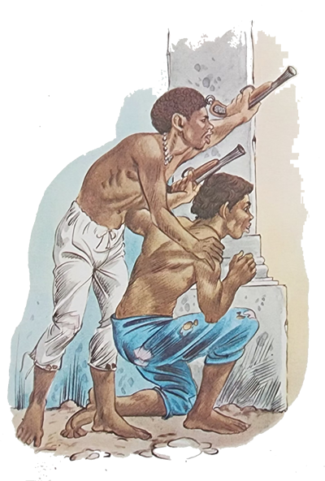
Embora fossem os mais valentes, não quer dizer que não tremessem só de pensar no que iam fazer. Seguir um fantasma!
Noite escura, sem Lua. Silêncio profundo só quebrado pelo cricri dos grilos e por um grito ou outro de alguma ave noturna. Os homens estavam ali, sem falar, os olhos postos na estrada, na expectativa da aparição.
Transcorrido algum tempo, um deles murmura numa voz que mal dá para ouvir:
- Olhem lá! Vejam! É ele!
O “fantausma” vinha vindo. Lentamente, flutuando na estrada, aproximava-se. Os homens tremiam de medo. Ele passou pelo lugar, parou por um instante perto deles e não foi só um que sentiu um desejo louco de correr. Aguentaram, porém, e foram atrás dele. Com todo o “cuidaudo”, é lógico.
- Não seria eu! – exclamou Sérgio. Ir atrás de fantasma!
- Vocês não estão levando a sério, estão? – perguntou o Arrelia. Não vão esquecer que é estória e ficar com medo, hein?
Mas continuando, não adiantou nada o sacrifício dos “coitaudos”. Depois de uma boa caminhada, o fantasma sumiu de repente. Tentaram outras vezes, outras pessoas tentaram, porém nada conseguiram. E assim o lugar onde está o tesouro continua desconhecido até hoje.
Terminada a estória, o Arrelia e as crianças voltaram ao hotel e só tornaram a sair à noite para dar umas voltas pelos arredores. Fazia uma noite bonita, enluarada. Pegaram uma estrada ladeada de mato, suavemente iluminada pelo luar. Silêncio profundo. Apenas um ou outro grito de alguma ave noturna e o cricri dos grilos. Iberê comentou:
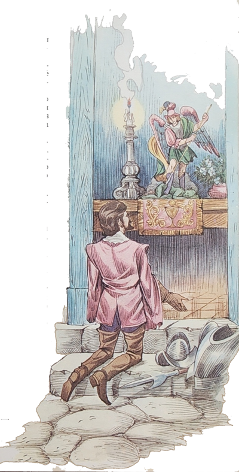
- Faz lembrar o lugar em que surgiu o fantasma, não faz?
O Arrelia olhou em redor e concordou:
- De fato. Só que não havia luar.
- Não seria bom nós voltarmos? – sugeriu Carlinhos.
- Não vá dizer que você está com medo do “fantausma”! – surpreendeu-se o Arrelia.
- Não é bem isso – respondeu o menino. É que este lugar é meio misterioso e parece que alguma coisa vai acontecer.
- Não tenha medo que não vai acontecer “nauda”. Fantasma não existe e não estamos mais nos tempos em que os bandidos viviam assaltando os que passavam.
- Eu si – sussurrou Carlinhos. Mas acho melhor voltarmos.
As outras crianças não resistiram e começaram a zombar do menino. Ele ficou mal-humorado e não disse mais nada.
- Olhe – continuou o Arrelia. Não se deve ter medo dessas coisas senão a própria imaginação faz a gente ver o que não quer.
- É isso mesmo – afirmou Iberê. Meu pai sempre fala isso. O Arrelia tem razão.
- Pois é! – finalizou o Arrelia, todo orgulhoso.
Marisa resolveu entrar na conversa:
- Mas, já pensaram só por brincadeira, se de fato o fantasma do fazendeiro aparecesse? O que será que faríamos?
- Eu nem prestaria atenção – respondeu o Arrelia.
- Nem eu – disse a menina. Imaginem! Ter medo . . .
Uma a uma, as outras crianças também afirmaram a sua disposição de não ligarem para o fantasma. Até Carlinhos, agora cheio de coragem, expressou a sua firmeza de ânimo diante de uma provável aparição.
- E ainda mais – tornou o Arrelia. Sabem o que eu faria? Dava umas “bengalaudas” nele.
Foi aplaudido com entusiasmo. Prosseguiram. Aí na estrada surgiu um vulto branco. Era um caboclo, de terno de brim, que seguia para a cidade.
- O que é aquilo? – perguntou Carlinhos, agarrando-se ao Arrelia.
- O quê? Aquilo o quê? – quis saber o Arrelia.
Todos avistaram o vulto que se aproximava e gritaram ao mesmo tempo: “O fantasma!”
O Arrelia resolveu que era melhor voltarem e deram meia volta. Apressaram o passo. O homem que já estava perto, por algum motivo queria falar com eles e gritou:
- Esperem! Quero falar com vocês!
Foi o suficiente. As crianças dispararam. O Arrelia disparou atrás delas e conseguiu ultrapassá-las. Manejando a bengala como se fosse uma espada, ele comandava:
- Para a frente. “criançauda”! Vamos embora!
E lá foram eles levantando poeira e deixando o caboclo a coçar a cabeça, sem saber o que pensar.
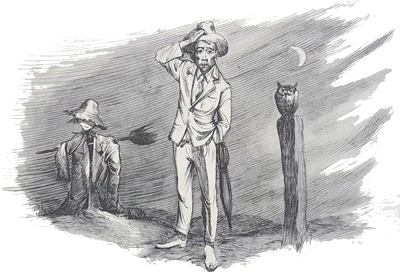